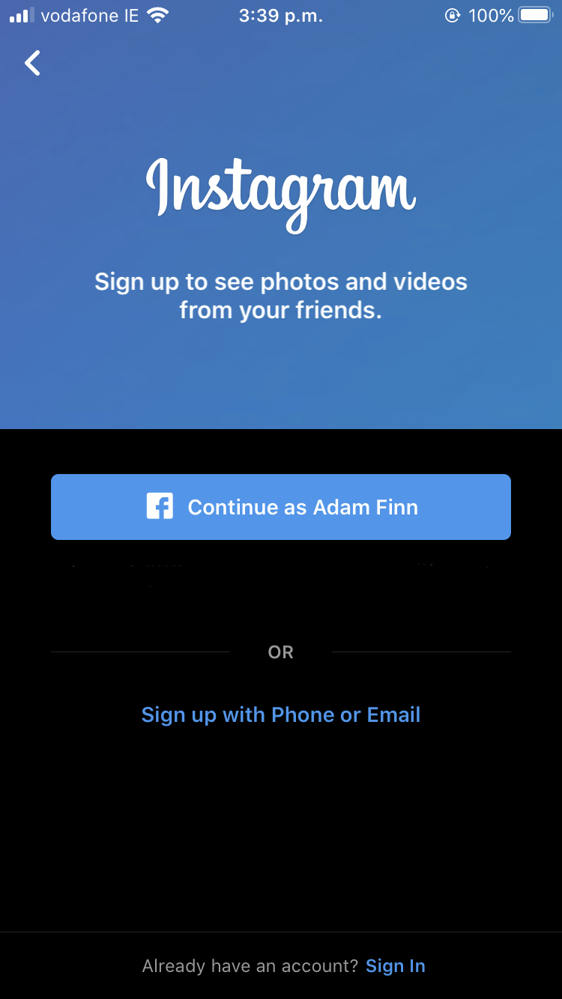
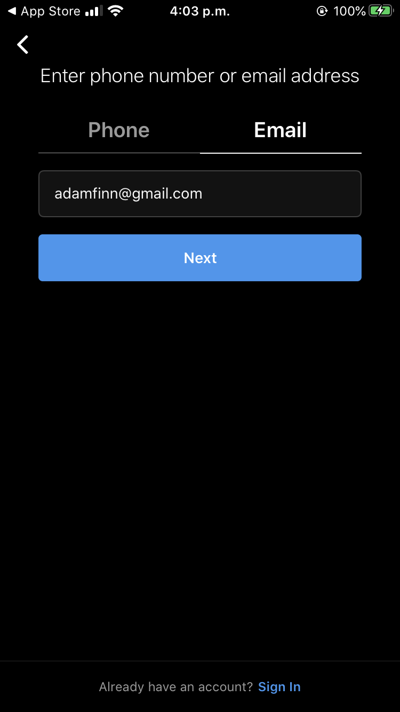

This is the Instagram Page!
Here I have listed what Instagram is and how to find it on both Smartphone and Computer.
I have also included information on the purpose of Instagram, how to make a post and how to set up a Professional Account.
Instagram is a social media app that allows users to share photos and videos from their lives, add captions, edit filters, tweak settings, engage with others, explore and creep, and so, so much more — you just have to know what you're doing so you don't get overwhelmed!
To start off making an account you will need either a Smartphone or a computer with access to the internet.
-First you will want to go to the Appstore and download Instagram. If you're on computer, simply just search Instagram.com and sign-up there.
From Smartphone, after you have downloaded and opened the app, you should see a screen like this.
 Simply press "Sign up with Phone or Email" choose your prefence and fill out all necessary personal information.
Once you have filled out your sign-up information, you should see a screen like this:
Making an Instagram post is easy and packed full of features!
-While at the home page, press the "+", located at the center-bottom of the screen.
-Next, you will need to select the picture or video you want to post. This is also the time to frame and crop your image the way you like>
-After selecting your image and pressing "Next" you will be given the option to add a premade colour filter on your image or edit it values independently with "Brightness", "Contrast" and "Saturation".
-Once you're happy with your image, press "Next" and you will be asked to add a caption and add friend or location tags.
-When you've made a caption and are ready to post, hit the "Share" button at the top corner and Done! Your first Instagram post!
Instagram has the representation as a social media for those trying to flaunt their lifestyle or show off their cat that they worship. Although this is mostly the case, there is so much of a bigger use that Instagram offers and in recent years has developed to cater for those utilising its platform for professional reasons.
Creators and small-time businesses are using Instagram as a way to promote themselves and their output or product.
Instagram has noticed this and developed a set of tools availible to anybody who knows how to use them. Here's how to access those tools...
-First, you want to navigate over to your profile page.
-Once here, press the tab at the top left of the screen to access your options.
-Select Settings -> Account and scroll to the bottom.
-There will be an option in blue called "Switch to Professional Account"
-This will take you through a process of what way you want your professional account to work.